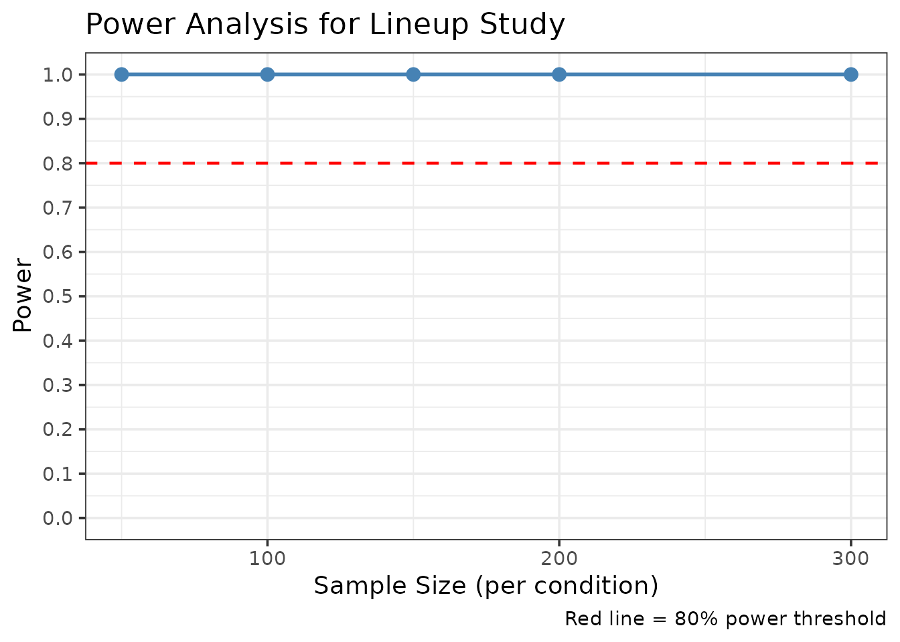
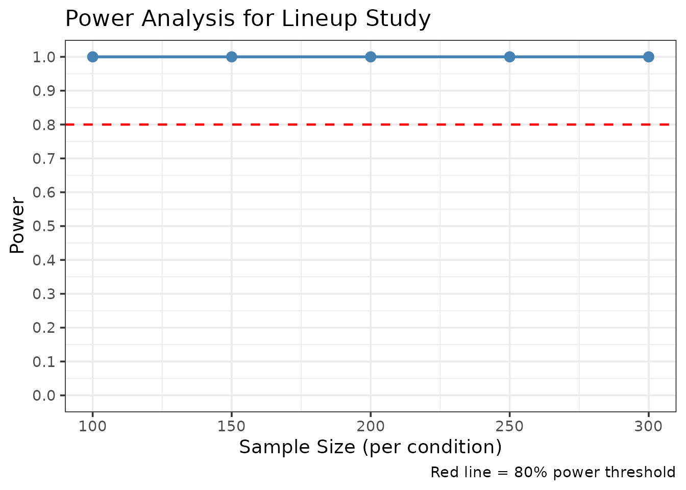
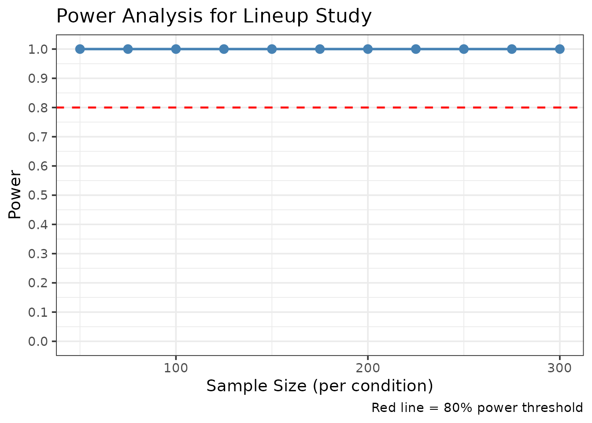

Data Simulation and Power Analysis for Lineup Studies
r4lineups package
2026-07-06
Source:vignettes/simulation_power_analysis.Rmd
simulation_power_analysis.RmdIntroduction
This vignette demonstrates how to use r4lineups’ data simulation and power analysis tools for planning eyewitness identification studies. These tools help researchers:
- Plan studies: Determine required sample sizes for detecting effects
- Validate methods: Test if analyses recover known parameters
- Explore scenarios: Compare different experimental designs
- Teach concepts: Demonstrate signal detection theory principles
The simulation framework implements a Signal Detection Theory (SDT) model with the MAX decision rule, following the methodology used in eyewitness identification research (Wixted et al., 2018).
Signal Detection Model
The simulation generates data using the following SDT framework:
Memory strength distributions: - Targets (guilty suspects): Normal(d’, 1) - Lures (foils/innocent suspects): Normal(0, 1)
MAX decision rule: - The witness selects the lineup member with the highest memory strength - If all memory strengths are below criterion c, the lineup is rejected
Parameters: - d_prime: Discriminability
between targets and lures (higher = better memory) -
c_criterion: Decision criterion (higher = more
conservative) - lineup_size: Number of lineup members -
conf_levels: Number of confidence scale points
Basic Data Simulation
Simulating a Single Dataset
library(r4lineups)
# Set seed for reproducibility
set.seed(2026)
# Simulate lineup data with moderate discriminability
sim_data <- simulate_lineup_data(
n_tp = 200, # 200 target-present lineups
n_ta = 200, # 200 target-absent lineups
d_prime = 1.5, # Moderate discriminability
c_criterion = 0.5, # Neutral criterion
lineup_size = 6, # Standard 6-person lineup
conf_levels = 5 # 5-point confidence scale
)
# View structure
head(sim_data)
#>
#> === Simulated Lineup Data ===
#>
#> Simulation Parameters:
#> Target-present lineups: 200
#> Target-absent lineups: 200
#> d': 1.5
#> Criterion: 0.5
#> Lineup size: 6
#> Decision rule: max
#> Confidence levels: 5
#>
#> Data Summary:
#> Total trials: 6
#> Target-present:
#> Suspect IDs: 1
#> Filler IDs: 1
#> Rejections: 0
#> Target-absent:
#> Suspect IDs: 0
#> Filler IDs: 4
#> Rejections: 0
#>
#> Suspect ID Accuracy: 0.6
#>
#> First 10 rows:
#> participant_id target_present identification confidence
#> 1 4 TRUE filler 4
#> 2 220 FALSE filler 2
#> 3 285 FALSE filler 5
#> 4 362 FALSE filler 3
#> 5 298 FALSE filler 4
#> 6 44 TRUE suspect 3
# Summary
table(sim_data$target_present, sim_data$identification)
#>
#> filler suspect
#> FALSE 168 32
#> TRUE 82 118The simulated data has the standard format required by r4lineups
functions: - target_present: TRUE (guilty suspect) or FALSE
(innocent suspect) - identification: “suspect”, “filler”,
or “reject” - confidence: Confidence rating (1 to
conf_levels) - response_time: Simulated response time
(optional)
Exploring Discriminability Levels
# Weak discriminability
weak_data <- simulate_lineup_data(
n_tp = 150, n_ta = 150,
d_prime = 1.0,
lineup_size = 6
)
# Strong discriminability
strong_data <- simulate_lineup_data(
n_tp = 150, n_ta = 150,
d_prime = 2.5,
lineup_size = 6
)
# Compare suspect ID rates
cat("Weak d' = 1.0:\n")
#> Weak d' = 1.0:
cat(" TP suspect IDs:",
mean(weak_data$target_present & weak_data$identification == "suspect"), "\n")
#> TP suspect IDs: 0.2333333
cat(" TA suspect IDs:",
mean(!weak_data$target_present & weak_data$identification == "suspect"), "\n\n")
#> TA suspect IDs: 0.1033333
cat("Strong d' = 2.5:\n")
#> Strong d' = 2.5:
cat(" TP suspect IDs:",
mean(strong_data$target_present & strong_data$identification == "suspect"), "\n")
#> TP suspect IDs: 0.42
cat(" TA suspect IDs:",
mean(!strong_data$target_present & strong_data$identification == "suspect"), "\n")
#> TA suspect IDs: 0.07666667As expected, higher discriminability leads to: - More correct IDs (target-present suspect IDs) - Fewer false IDs (target-absent suspect IDs)
Power Analysis for Study Planning
Simple Power Analysis
Use simulate_power_analysis() to determine the sample
size needed to detect an effect:
# Power analysis for detecting d' = 1.5 with ROC pAUC
power_result <- simulate_power_analysis(
sample_sizes = c(50, 100, 150, 200, 300),
d_prime = 1.5,
n_simulations = 100, # Use 500+ for real studies
alpha = 0.05
)
#> Simulating sample size: 50
#> Simulating sample size: 100
#> Simulating sample size: 150
#> Simulating sample size: 200
#> Simulating sample size: 300
# View results
print(power_result)
#> sample_size mean_stat sd_stat ci_lower ci_upper power
#> 2.5% 50 0.1288457 0.02966739 0.08496667 0.1852083 1
#> 2.5%1 100 0.1328031 0.01840048 0.09768938 0.1643758 1
#> 2.5%2 150 0.1305349 0.01389554 0.10236481 0.1572742 1
#> 2.5%3 200 0.1327607 0.01379545 0.10697328 0.1590655 1
#> 2.5%4 300 0.1328042 0.01077195 0.11178160 0.1554874 1
# Plot power curve
plot(power_result)
The power analysis shows how power increases with sample size. For 80% power to detect d’ = 1.5, we typically need 150-200 participants per condition.
Different Discriminability Levels
Power analysis for different discriminability levels:
# Power to detect d' = 2.0
power_high <- simulate_power_analysis(
sample_sizes = c(100, 150, 200, 250, 300),
d_prime = 2.0,
n_simulations = 100
)
#> Simulating sample size: 100
#> Simulating sample size: 150
#> Simulating sample size: 200
#> Simulating sample size: 250
#> Simulating sample size: 300
print(power_high)
#> sample_size mean_stat sd_stat ci_lower ci_upper power
#> 2.5% 100 0.1696722 0.02194507 0.1346002 0.2257902 1
#> 2.5%1 150 0.1740220 0.01916954 0.1389896 0.2093194 1
#> 2.5%2 200 0.1737213 0.01819713 0.1403551 0.2114540 1
#> 2.5%3 250 0.1749547 0.01398806 0.1487243 0.2045563 1
#> 2.5%4 300 0.1752754 0.01479037 0.1473659 0.1990578 1
plot(power_high)
The plot shows that with higher discriminability (d’ = 2.0), smaller sample sizes are needed to achieve adequate power.
Integration with r4lineups Analyses
Simulated data works seamlessly with all r4lineups functions:
ROC Analysis
# Generate data
sim_roc <- simulate_lineup_data(
n_tp = 200, n_ta = 200,
d_prime = 1.8,
conf_levels = 5
)
# Compute ROC curve
roc_result <- make_roc(sim_roc, lineup_size = 6)
print(roc_result)
#>
#> === Lineup ROC Analysis ===
#>
#> Partial AUC: 0.164
#> Target-present lineups: 200
#> Target-absent lineups: 200
#> Lineup size: 6
#> Confidence levels: 4
#>
#> ROC Data:
#> # A tibble: 5 × 5
#> confidence correct_id_rate false_id_rate n_correct_ids n_false_ids
#> <dbl> <dbl> <dbl> <dbl> <dbl>
#> 1 5 0.615 0.112 123 22.3
#> 2 4 0.705 0.254 141 50.8
#> 3 3 0.735 0.299 147 59.8
#> 4 2 0.74 0.304 148 60.8
#> 5 1 0 0 0 0
#>
#> Plot available in $plotCAC Analysis
# Confidence-Accuracy Characteristic
cac_result <- make_cac(sim_roc)
print(cac_result)
#>
#> === Lineup CAC Analysis ===
#>
#> Overall Accuracy: 0.709
#> Total Suspect IDs: 209
#> Lineup size: 6
#>
#> CAC Data:
#> # A tibble: 4 × 6
#> confidence n_correct n_incorrect n_total accuracy se
#> <chr> <int> <dbl> <dbl> <dbl> <dbl>
#> 1 2 1 1 2 0.5 0.354
#> 2 3 6 9 15 0.4 0.126
#> 3 4 18 28.5 46.5 0.387 0.0714
#> 4 5 123 22.3 145. 0.846 0.0299
#>
#> Plot available in $plotRAC Analysis
# Generate data with response times
sim_rac <- simulate_lineup_data(
n_tp = 200, n_ta = 200,
d_prime = 1.5,
include_response_time = TRUE
)
# Response Time-Accuracy Characteristic
rac_result <- make_rac(
sim_rac,
time_bins = c(0, 5000, 10000, 15000, 20000)
)
print(rac_result)
#>
#> === Lineup RAC Analysis ===
#>
#> Overall Accuracy: 0.652
#> Total Suspect IDs: 192
#> Lineup size: 6
#>
#> RAC Data:
#> # A tibble: 4 × 7
#> response_time mean_time n_correct n_incorrect n_total accuracy se
#> <chr> <dbl> <int> <dbl> <dbl> <dbl> <dbl>
#> 1 [0,5e+03] 4475. 39 9 48 0.812 0.0563
#> 2 (5e+03,1e+04] 6158. 86 57.5 144. 0.599 0.0409
#> 3 (1e+04,1.5e+04] NaN 0 0.167 0.167 0 0
#> 4 (1.5e+04,2e+04] NaN 0 0 0 NA NA
#>
#> Plot available in $plotFull ROC Analysis
# Full ROC using all responses
fullroc_result <- make_fullroc(sim_roc)
print(fullroc_result)
#>
#> === Full Lineup ROC Analysis (Smith & Yang, 2020) ===
#>
#> Full AUC: 0.854
#> Target-present lineups: 200
#> Target-absent lineups: 200
#> Lineup size: 6
#> Ordering method: diagnosticity
#> Operating points: 8
#>
#> ROC Data (first 10 points):
#> cumulative_hit_rate cumulative_false_alarm_rate evidence_label
#> 1 0.000 0.000 origin
#> 2 0.615 0.055 suspect_5
#> 3 0.620 0.055 suspect_2
#> 4 0.650 0.070 suspect_3
#> 5 0.740 0.165 suspect_4
#> 6 0.915 0.505 filler_5
#> 7 0.990 0.790 filler_4
#> 8 1.000 0.970 filler_3
#> 9 1.000 1.000 filler_2
#>
#>
#> Diagnosticity Table (ordered by evidence strength):
#> evidence_label hit_rate false_alarm_rate diagnosticity_ratio
#> suspect_5 0.615 0.055 11.18181818
#> suspect_2 0.005 0.000 5.00000000
#> suspect_3 0.030 0.015 2.00000000
#> suspect_4 0.090 0.095 0.94736842
#> filler_5 0.175 0.340 0.51470588
#> filler_4 0.075 0.285 0.26315789
#> filler_3 0.010 0.180 0.05555556
#> filler_2 0.000 0.030 0.00000000
#>
#> Plot available in $plotMethod Validation: Parameter Recovery
Use simulation to test if your analyses can recover known parameters:
# Simulate data with known d' = 2.0
true_dprime <- 2.0
recovery_data <- simulate_lineup_data(
n_tp = 300, n_ta = 300,
d_prime = true_dprime,
lineup_size = 6,
conf_levels = 5
)
# Fit 2-HT model and check if we recover similar discriminability
# Note: Model fitting may fail with some simulated datasets
tryCatch({
model_2ht <- fit_winter_2ht(
recovery_data,
lineup_size = 6,
target_present = "target_present",
identification = "identification"
)
cat("True d':", true_dprime, "\n")
cat("Recovered dP (detection):", round(model_2ht$parameters["dP"], 3), "\n")
cat("Expected: Higher d' should lead to higher dP parameter\n")
}, error = function(e) {
cat("Model fitting did not converge. Try different data or parameters.\n")
})Comparing Experimental Designs
Use simulation to compare different lineup configurations:
# Standard 6-person lineup
lineup_6 <- simulate_lineup_data(
n_tp = 200, n_ta = 200,
d_prime = 1.5,
lineup_size = 6
)
# Smaller 4-person lineup (potentially easier)
lineup_4 <- simulate_lineup_data(
n_tp = 200, n_ta = 200,
d_prime = 1.5,
lineup_size = 4
)
# Larger 8-person lineup (potentially harder)
lineup_8 <- simulate_lineup_data(
n_tp = 200, n_ta = 200,
d_prime = 1.5,
lineup_size = 8
)
# Compare suspect ID rates
compare_lineups <- data.frame(
Lineup_Size = c(4, 6, 8),
TP_Suspect_ID = c(
mean(lineup_4$target_present & lineup_4$identification == "suspect"),
mean(lineup_6$target_present & lineup_6$identification == "suspect"),
mean(lineup_8$target_present & lineup_8$identification == "suspect")
),
TA_Suspect_ID = c(
mean(!lineup_4$target_present & lineup_4$identification == "suspect"),
mean(!lineup_6$target_present & lineup_6$identification == "suspect"),
mean(!lineup_8$target_present & lineup_8$identification == "suspect")
)
)
print(compare_lineups)
#> Lineup_Size TP_Suspect_ID TA_Suspect_ID
#> 1 4 0.3575 0.1175
#> 2 6 0.3200 0.0625
#> 3 8 0.2850 0.0875Advanced: Custom Simulation Parameters
Varying Decision Criterion
# Liberal criterion (low c)
liberal_data <- simulate_lineup_data(
n_tp = 150, n_ta = 150,
d_prime = 1.5,
c_criterion = 0.0 # More liberal
)
# Conservative criterion (high c)
conservative_data <- simulate_lineup_data(
n_tp = 150, n_ta = 150,
d_prime = 1.5,
c_criterion = 1.0 # More conservative
)
# Compare rejection rates
cat("Liberal criterion:\n")
#> Liberal criterion:
cat(" Rejection rate:", mean(liberal_data$identification == "reject"), "\n\n")
#> Rejection rate: 0
cat("Conservative criterion:\n")
#> Conservative criterion:
cat(" Rejection rate:", mean(conservative_data$identification == "reject"), "\n")
#> Rejection rate: 0.01Multiple Confidence Levels
# 3-point scale
conf_3 <- simulate_lineup_data(
n_tp = 150, n_ta = 150,
d_prime = 1.5,
conf_levels = 3
)
# 7-point scale
conf_7 <- simulate_lineup_data(
n_tp = 150, n_ta = 150,
d_prime = 1.5,
conf_levels = 7
)
cat("3-point scale: unique values =", length(unique(conf_3$confidence)), "\n")
#> 3-point scale: unique values = 2
cat("7-point scale: unique values =", length(unique(conf_7$confidence)), "\n")
#> 7-point scale: unique values = 7Practical Examples
Example 1: Planning a Lineup Procedure Study
Research question: How many participants do we need to detect discriminability at d’ = 1.5?
# Power analysis for d' = 1.5
lineup_power <- simulate_power_analysis(
sample_sizes = seq(50, 300, by = 25),
d_prime = 1.5,
n_simulations = 200,
alpha = 0.05
)
#> Simulating sample size: 50
#> Simulating sample size: 75
#> Simulating sample size: 100
#> Simulating sample size: 125
#> Simulating sample size: 150
#> Simulating sample size: 175
#> Simulating sample size: 200
#> Simulating sample size: 225
#> Simulating sample size: 250
#> Simulating sample size: 275
#> Simulating sample size: 300
plot(lineup_power)
# Result: We need approximately 150-200 participants per condition for 80% powerExample 2: Testing a New Analysis Method
Verify that your new analysis recovers the correct underlying parameters:
# Simulate data with known parameters
validation_data <- simulate_lineup_data(
n_tp = 500, n_ta = 500,
d_prime = 2.0,
lineup_size = 6,
conf_levels = 5,
seed = 999
)
# Run your analysis
eig_result <- compute_eig(validation_data, prior_guilt = 0.5)
cat("EIG (Expected Information Gain):", round(eig_result$eig, 4), "bits\n")
#> EIG (Expected Information Gain): 0.3912 bits
cat("Interpretation: Higher d' should produce higher EIG\n")
#> Interpretation: Higher d' should produce higher EIGBest Practices
1. Sample Size Selection
- Use power analysis to determine minimum sample sizes
- Aim for 80% power (β = 0.20)
- Account for potential dropout/exclusions
- Consider practical constraints (time, resources)
2. Simulation Parameters
Choose realistic parameter values: - d’ values: - Weak: 0.8 - 1.2 - Moderate: 1.3 - 1.8 - Strong: 1.9 - 2.5 - Very strong: > 2.5
-
Criterion:
- Liberal: 0.0 - 0.3
- Neutral: 0.4 - 0.6
- Conservative: 0.7 - 1.2
-
Lineup size:
- Typical: 6 (most common)
- Range: 4 - 8
3. Number of Simulations
- Exploratory: 100-200 simulations
- Planning: 500-1000 simulations
- Publication: 1000-2000 simulations
4. Reproducibility
Always set a seed for reproducibility:
# Set seed at the start
set.seed(2026)
# Your simulation code here
reproducible_data <- simulate_lineup_data(
n_tp = 100, n_ta = 100,
d_prime = 1.5
)Interpretation Guidelines
Common Pitfalls
1. Insufficient Sample Size
# Too small for reliable estimates
small_sample <- simulate_lineup_data(n_tp = 20, n_ta = 20, d_prime = 1.5)
# ROC will be unreliable
roc_small <- make_roc(small_sample, lineup_size = 6, show_plot = FALSE)
cat("Small sample pAUC:", round(roc_small$pauc, 3),
"(unreliable with n=40)\n")
#> Small sample pAUC: 0.086 (unreliable with n=40)2. Unrealistic Parameter Values
# Unrealistically high d' (rarely observed in real studies)
unrealistic <- simulate_lineup_data(
n_tp = 100, n_ta = 100,
d_prime = 4.0 # Too high!
)
cat("Suspect ID rate:",
mean(unrealistic$target_present & unrealistic$identification == "suspect"),
"\n")
#> Suspect ID rate: 0.5
cat("This is unrealistically high for real eyewitness data\n")
#> This is unrealistically high for real eyewitness data3. Ignoring Multiple Testing
When running many simulations, adjust for multiple comparisons:
# If testing 5 different conditions, use Bonferroni correction
alpha_corrected <- 0.05 / 5
cat("Adjusted alpha for 5 comparisons:", alpha_corrected, "\n")
#> Adjusted alpha for 5 comparisons: 0.01Summary
Key functions demonstrated:
-
simulate_lineup_data(): Generate lineup identification data -
simulate_power_analysis(): Determine required sample sizes - Integration with all r4lineups analyses (ROC, CAC, RAC, Full ROC, models)
Key takeaways:
- Use simulation for study planning and power analysis
- Validate methods with parameter recovery
- Choose realistic parameter values
- Use sufficient bootstrap/simulation samples
- Always report your assumptions and seed values
References
Wixted, J. T., Vul, E., Mickes, L., & Wilson, B. M. (2018). Models of lineup memory. Cognitive Psychology, 105, 81-114.
Mickes, L., Seale-Carlisle, T. M., Chen, X., & Boogert, S. (2024). pyWitness 1.0: A python eyewitness identification analysis toolkit. Behavior Research Methods, 56, 1533-1550.
Wixted, J. T., & Mickes, L. (2012). The field of eyewitness memory should abandon probative value and embrace receiver operating characteristic analysis. Perspectives on Psychological Science, 7(3), 275-278.
Further Reading
- See
?simulate_lineup_datafor complete parameter documentation - See
?simulate_power_analysisfor power analysis options - See vignette(“model_comparison”) for comparing different models
- See vignette(“pauc_comparison”) for statistical comparison of ROC curves